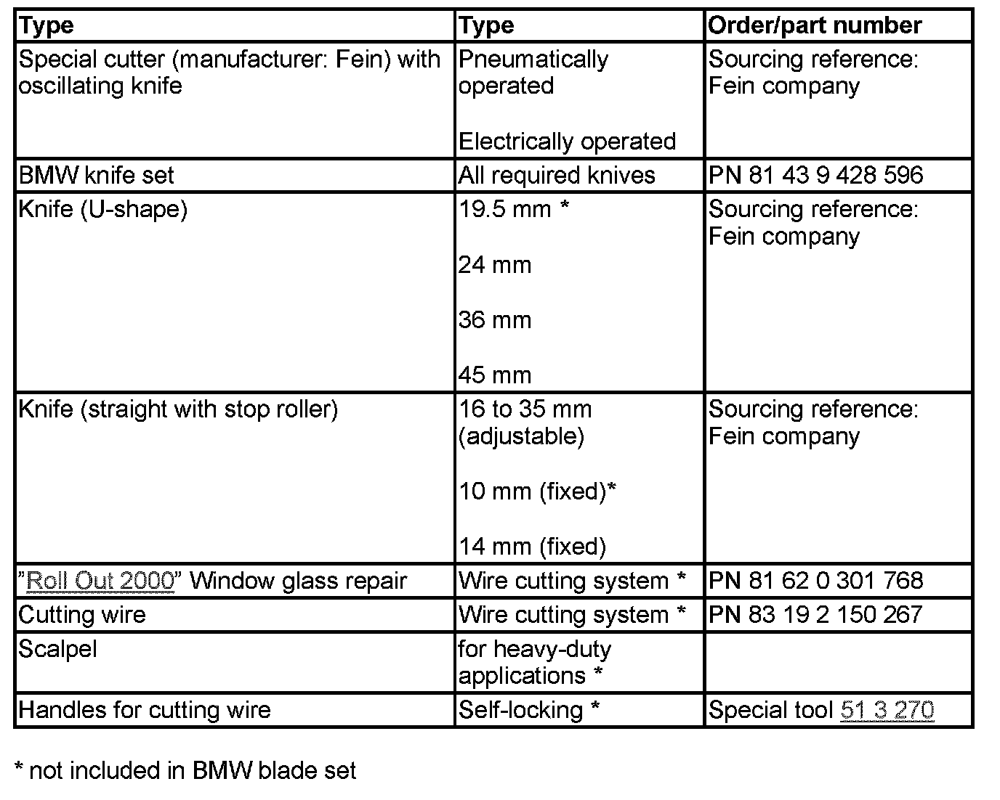
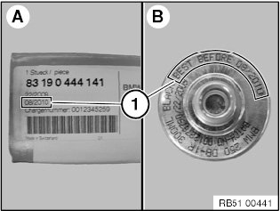
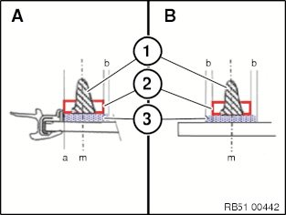
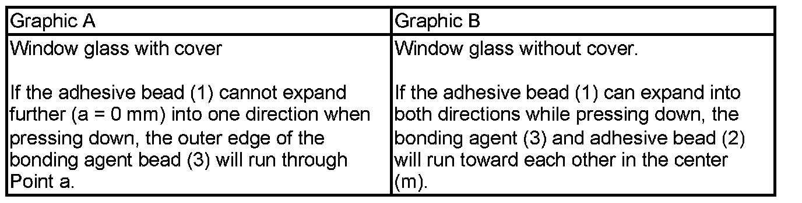
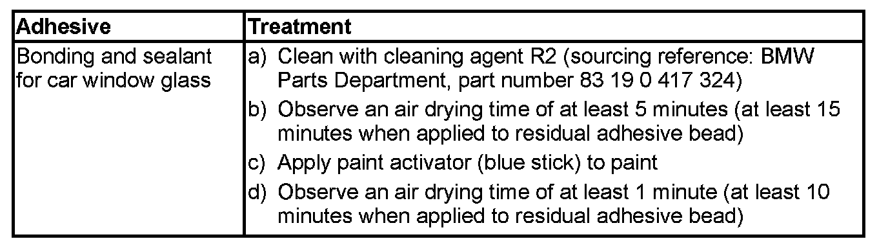
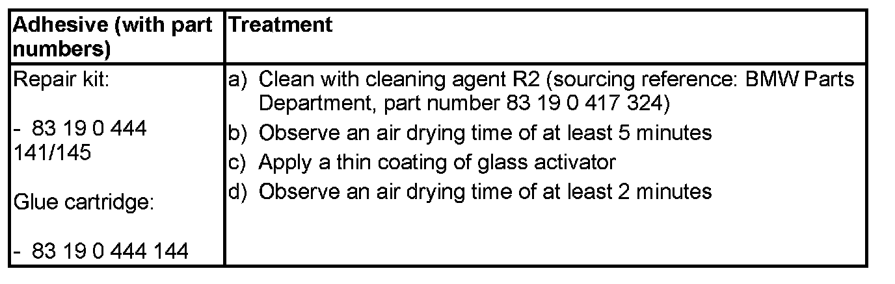
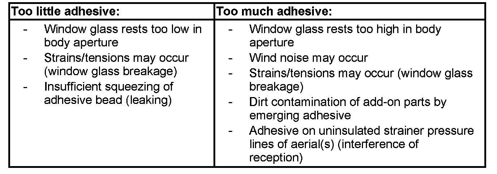
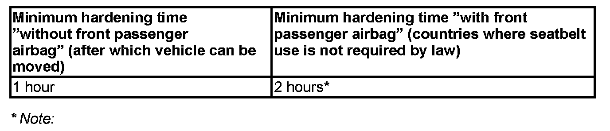

51 31 ... Notes on Window Bonding
Erforderliche Spezialwerkzeuge:
- 51 0 010
- 51 3 210
- 51 3 270
51 31 ... Notes On Window Bonding
IMPORTANT:
For 03-2010
- a "Repair kit, large" was introduced for the "1 Hour System" under part number 83 19 0 444 145.
In addition to the "Repair kit, small" delivery, this kit includes a second window glue cartridge.
Recommended for 5-Series, 6-Series, 7-Series, X3, X5.
These notes are not applicable to side window bonding (door "centre") on the E38/L7:
Description for removing and installing window glass:
- Is located at the end of the document under the cross reference "Refer to repair instructions"
General:
- The vehicle can be towed away or driven without a windscreen, rear window and side window.
The windscreen, rear window and side windows are glued to the body. This bonding will increase the torsional rigidity of the vehicle. To obtain perfect bonding, comply with the installation procedure described in the following.
- The adhesive must be applied at room temperatures > 15 °C to avoid negatively affecting the bonded connection.
Adjust the component and vehicle temperature accordingly.
- A relative humidity of < 30% significantly slows hardening.
- The window glass must be secured against slipping with yellow plastic adhesive tape (sourcing reference: BMW Parts Department) after being installed. The paint must be completely hardened after painting work.
- Always apply the adhesive in such a way as to achieve tension-free bonding.
On-the-job safety:
When working with bonding products (adhesive, cleaning agent, bonding agent, etc.):
- Wear safety goggles, protective gloves and if necessary an apron.
- Ensure rooms are well ventilated.
- Change work clothing contaminated with adhesive immediately.
- Change work clothing contaminated with solvents and swelling agents immediately (keep spare work clothing on hand).
- Take skin protection measures, provide washing facilities including hot water, use silicone-free skin creams
- Provide eye douche facilities, change water regularly (once a month).
- Comply with the relevant safety regulations
- Do not eat, drink or smoke in areas of polyurethane processing.
- All use and safety information of the safety data sheet (SDB) for the applicable product apply. The safety data sheet (SDB) can be obtained from the Aftersales Assistance Portal (ASAP)
Replacement of windscreens:
Version with Head-Up Display (HUD):
- Marking for HUD must be present on the windscreen
Version with front passenger airbag:
- Stick on label
Tools for cutting through adhesive bead:

Storage temperature:
Storage temperature of all adhesive products of more than 15 °C must be observed.
Adhesive:
The BMW approved polyurethane adhesive must be used for bonding:
- Window glass adhesive (Part number 83 19 0 444 144*)
- Small repair kit (Part number 83 19 0 444 141*)
- Large repair kit (part number 83 19 0 444 145* contains a second window glass adhesive cartridge)
* Sourcing reference: BMW Parts Department
Adhesive is applied to window glass with cartridge gun (pneumatically or electrically operated, sourcing reference: BMW Workshop Equipment and Planning Documentation).
Expiry date of adhesive:
Repair kit (A) and glue cartridges (B) are marked with a date (best before).
Date (1) refers to the calendar week and year (KW/JJJJ).

The adhesive cannot be used after this date (1).
Disposal of adhesive:
Pure hardened adhesive is handled as normal waste.
The adhesive is disposed of in paper sacks so that it can react with moisture.
Non-hardened adhesive, cartridges and mixtures of adhesive and solvents and the like must be disposed of as hazardous waste.
Note national regulations.
Bonding agent (glass activator):
The BMW-approved bonding agents must be used to treat adhesive areas:
- Glass activator (on ceramic glass), yellow stick, BMW part number: 83 19 0 444 142
- Paint activator (on sheet metal flange or residual adhesive bead) blue stick BMW part number: 83 19 2 154 458
WARNING: Wear cut resistant gloves when breaking the glass ampule
Prepare glass activator and paint activator for application by shaking and snapping (breaking glass ampule).
Apply glass activator by pressing gently. There is no need for final wiping. Air drying time approx. 2 minutes.
Apply paint activator by pressingly gently. Then wipe dry with a paper towel (included in the set).
Bonding agent expiry date:
Repair kit and bonding agent are marked with a date (Best Before).
- The bonding agent may only be used up to this date (if not already opened previously).
- After opening, keep only for one week even if the expiry date has not yet been reached.
Application of bonding agent:
The bonding agent is used for adhesion between glass or ceramic glass and the adhesive. Therefore, a thin, homogeneous and continuous line of bonding agent must be applied.
After compressing the adhesive bead, make sure that there is 1 to 2 mm wide bonding agent trace is on the ceramic glass next to the adhesive bead (serves visual inspection).
The adhesive bead may become up to 15 mm wide in compressed condition. The width of the adhesion agent is therefore at least 17 mm with windscreens and rear windows and at least 9 mm with side window.
The bonding agent may not be applied in the field of view or the point grid. Fresh bonding agent in the field of view must immediately be wiped off with solvent because hardened bonding agent will leave a haze behind.


Removal of window glass:
IMPORTANT: As of E63 and E87 it will only be possible to remove the rear window with the "Roll Out 2000".
Cover side walls, roof-mounted aerial and if necessary interior equipment with protective covers.
Tape off body with fabric adhesive tape (e.g. Tesa) in areas where the oscillating knife could damage the window glass or the paint.
When using cutting wire, pull cutting wire ends through special tool 51 3 270, bend and tape over with fabric adhesive tape (e.g. Tesa) (risk of injury and damage).
When removing the window glass:
- Wear safety goggles and protective gloves.
Cut through adhesive bead of window glass:
- With "Roll Out 2000" * (wire cutting system); no paint is damaged here in the case of narrow gaps
- with special cutter* and oscillating knife*
*Sourcing reference: BMW Workshop Equipment and Planning Documentation
Prior to each use, regrind the knife with a grindstone while the machine is running (new knives also).
Avoid damage to paint on body cutout.
Guide knife carefully between body and window glass.
Run blade of knife parallel to glass.
Cut through adhesive bead as closely as possible to window glass.
To remove residual adhesive bead in body aperture (and on window glass if reusing):
- Use a scalpel for heavy-duty applications
- Cut off adhesive residue to a thickness of approx. 0.5 mm
- Remove residual adhesive bead only briefly before bonding
Damage to paintwork in body aperture:
To ensure long-term corrosion protection, it is absolutely essential to touch up damage to paintwork.
The "BMW Color System" painting handbook forms the basis of these repair instructions and must be observed without fail.
Touch up damage to paintwork on body aperture with BMW multibase filler.
Grind out scratches in non-visible areas and touch up with BMW multibase filler.
Grind extensive areas of damage down to the bare metal and coat with BMW multibase filler (layer thickness 30 ... 40 micrometers).
Hardening time:
- With infrared, at least 10 minutes
- Without infrared for at least 60 °C, at least 30 minutes
- Without infrared for at least 20 °C, at least 24 hours
If a complete build-up of paint is required in the visible area:
- Tape off primed adhesive flange before applying top coat
IMPORTANT: Observe hardening time of BMW multibase filler otherwise a perfect bond cannot be guaranteed.
Treatment of adhesive area in body aperture:

IMPORTANT: Do not use Sika remover 208 for cleaning in the adhesive area.
Preparation for installation:
Prepare plastic nozzle(s) for shaping adhesive bead (when not using the standard nozzle C), can be cut to size during the air drying time.
Lay a sample bead of approx. 50 mm; if OK, apply immediately to window glass.
- Interruption must be < 5 seconds (incorrect mixture ratio).
Glue cartridge must be vertical to window glass.
Black ceramic glass impermeable to UV light is located on the peripheral zone of the inside edge of the window to protect the adhesive bead.
Ceramic glass must not be damaged and must be treated as follows.
Treatment of ceramic glass surface (inside of window):

Version with inspection glass for vehicle identification number in windscreen only:
- Close inspection glass (left bottom) with Sika bonding base VP 206 (part number 83 19 9 407 777*)
(*sourcing reference: BMW Parts Service)
Except for:
All US/GB models. In addition, all models or models on which the black dashboard cover means that the body colour cannot be seen through the inspection glass.
Adhesive quantities:
Approx. 1 1/4 glue cartridges are required to bond the windscreen on the following vehicles:
- 7 Series
- 5 Series from E60
- X5
- X3
Effect of differing adhesive quantities:

Spacer buffer (spacer):
Before sticking on new spacer buffers, remove all remaining traces of existing spacer buffers completely.
Position of spacer buffers must be observed exactly.
Incorrectly fitted spacer buffers will result in:
- Windscreen glass breakage
- Leakage (if the spacer buffer is in the adhesive area)
- Wind noises
Installation:
To prevent a pressure build-up in the passenger compartment when the doors are closed:
- Open a side window
IMPORTANT:
- Once the adhesive bead has been applied, the window glass must be installed within 7 minutes (depending on air humidity, temperature).
- After 7 minutes the adhesive bead forms a skin which can no longer guarantee a perfect bond.
The general rule is:
To secure the window glass, use only the yellow plastic adhesive tape (sourcing reference: BMW Parts Department, part number 83 19 9 410 979).
The glass will slip down if other adhesive tapes are used.
Window glass slippage will result in leaks and wind noises.
Remove adhesive residue immediately with adhesive remover (Sika remover 208, sourcing reference: BMW Parts Department). Do not press out the window glass again.
Hardened adhesive can only be removed mechanically.
Check height of windscreen/rear window with special tool 51 0 010or51 3 210.
Assemble vehicle.
Hardening:
The adhesive hardens by reacting with air humidity at room temperature.
Minimum hardening time (table) is obtained from 22 °C and 38 % relative air humidity.
A relative humidity of < 30% significantly slows hardening.
At ambient temperatures above 23 °C and 50 % relative air humidity (hot countries), the adhesive open time is shortened to approx. 5 minutes (skin formation time).
The adhesive hardening process is interrupted completely at ambient temperatures below 5 °C. In this event, there will be no increase in t he strength of the bonded connection.
Do not subject the vehicle to load on one side during the minimum hardening time (see table, without front passenger airbag), such as e.g.:
- one wheel on kerb
- vehicle hoist
- etc.
Manoeuvring inside garage/workshop:
- only permitted on level ground
- do not under any circumstances drive over approach ramps, e.g. into multistorey car parks
Remove adhesive tapes after hardening time.
If you fail to adhere to the minimum hardening times (see table, without front passenger airbag):
- Leaks and/or wind noises may occur at the window glass
Minimum hardening time:

Vehicles with front passenger airbag:
The vehicle can be transferred to the customer after a 1-hour hardening time with the following warning:
Once the windscreen glass has been bonded, all occupants must travel with their seat belts attached for 1 hour.
IMPORTANT: If the minimum hardening time is not adhered to, an accident can cause the passenger together with the windscreen to fall out of the vehicle after the front passenger airbag deploys.
Locate leaks:
- by spraying water underneath sealing lips
- with ultrasonic leak detector (sourcing reference: BMW Parts Department)
If necessary, seal leakage with appropriate nozzle.
Version with GPS navigation system 1 (up to 9/97):
After installation of rear window:
- Recalibrate magnetic field probe
- Refer to functional description in ISID (Integrated Service Information Display/Diagnosis and Information System)
Version with rain sensor, rain/light sensor or rain/light solar sensor:
Remove complete rain sensor, rain/light sensor or rain/light solar sensor, see repair instructions.
After replacing windscreen:
- Initialize rain sensor, rain/light sensor or rain/light solar sensor
- Refer to functional description in ISID (Integrated Service Information
Display/Diagnosis and Information System)
Version with automatic air conditioning:
After replacing windscreen:
If condensation sensor is not mounted on new windscreen:
Replace condensation sensor, refer to repair instructions.
Version with Head-Up Display (HUD):
When replacing windscreen in vehicles with rain/light solar sensor, replace this completely: See repair instructions.
Before bonding, install windscreen with seal(s) and check HUD; if necessary, press expanding foam tape down with hand roller.
After bonding windscreen, check and if necessary adjust HUD.
Work steps for removing and installing window glass:
See repair instructions.
NOTE: If the document for the selected model is not required or not approved, the following message will be displayed when clicking on the "cross-reference": "No additional documents available in the current vehicle context".